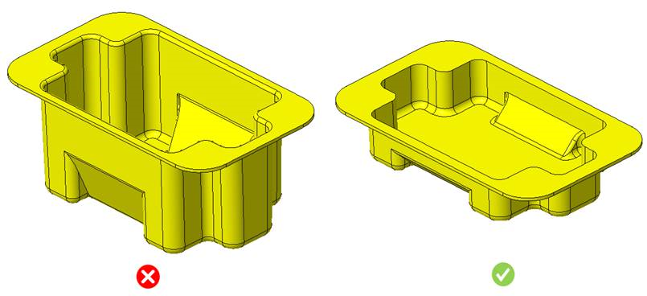
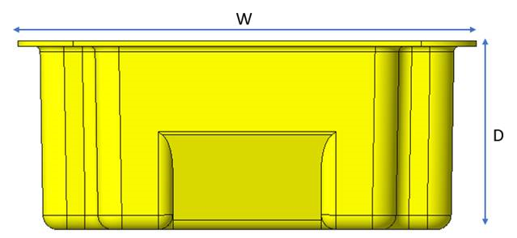

本ルールは、成形深さと部品幅を算出することで、ドロー深さ比の最大値をチェックします。
熱成形では、ドローが深すぎるとシートが破れる可能性があります。より深い、または背の高い部品の場合、より厚い初期シート（ゲージ）が必要になります。部品設計時には、設計者はドロー深さの制限を把握しておく必要があります。
雌型を用いたストレート真空成形の場合、深さと幅の比（深さ／幅）は 0.5 を超えてはなりません。
雄型を用いたドレープ成形の場合、この比は 1.0 を超えてはなりません。場合によっては、プラグアシストやスリップリングを使用することで、最大 2.0 程度まで達成できることもあります。
一般的な設計ガイドラインでは、深さと幅の比について次のように示されています。
浅いドラフトは深いドローよりも製造が容易であり、完成部品の肉厚を均一に保つことができます。


ここで、
W = 部品の幅
D = 部品の深さ